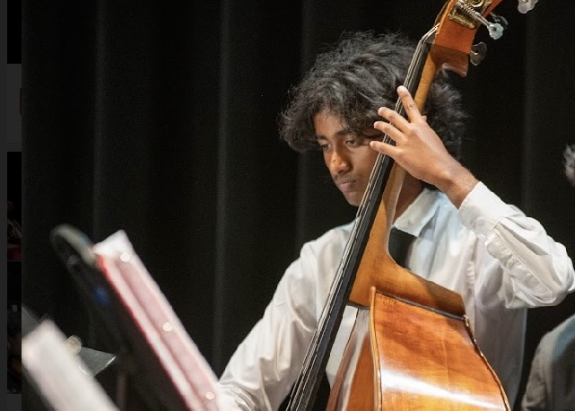

About Me
Kshitij Gairola
My 7th grade science teacher may have been the most impactful teacher I have ever had, and he was a pivotal part in what I choose to do now. While I may not have any specific career in mind, my interests ranging anywhere from finance to law, the extracurricular activities I am choosing to pursue now were at least in part due to him. He was the primary reason I chose to look into the sciences for a career, and while I may not have decided on a specific career, my pursuing various olympiads for college admissions, hopefully enabling me to attend a good university when I end up applying to various colleges. If I were to choose one specific career to do for the rest of my life though, I would choose to be a professor. Teaching others is something I have just recently realized I do enjoy quite a bit, and while it may not be my favorite activity, the freedom in research and the cutting edge developments you accomplish as an academic make the career choice very enticing.
Over the years, I have had many valuable traits and skills instilled in me, with three I believe to be the most valuable. The first of the traits I have is deep curiosity for the topics that interest me, which will be useful in the scenario I become an academic. The second of the traits is an oddly high level of competence at standardized testing, useful for the day I end up applying to college and have to submit an SAT score. These skills have enabled me to perform at my best on standardized tests, and perform well at robotics, although I no longer do robotics.
The achievement I am the most proud of is ranking in the top 200 in the nation in Public Forum Debate at my peak, tying into what I believe to be the third and most important of the three traits, a proficiency at public speaking. While I have only been debating for the past 6 months, it may well be the best extracurricular activity I have pursued to date. It has enabled me to become a proficient public speaker, enabling me to persuade others and become a strong presenter, a skill that is invaluable in various careers.
In conclusion, the environment and people I have known have shaped the valuable skills I have acquired. I thank you for the time spent reading this, and I invite you to explore the rest of my website. Thank you!